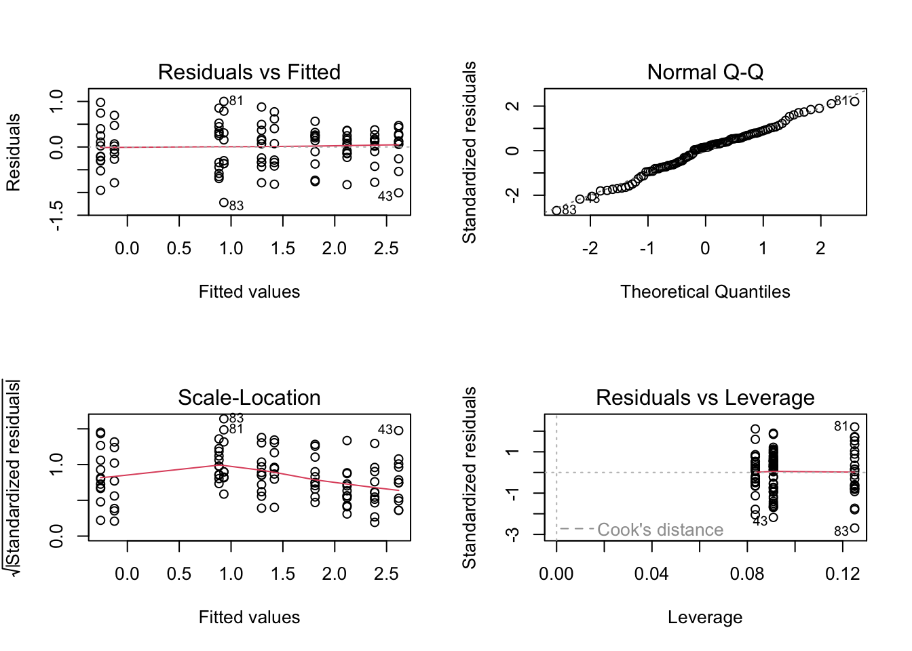
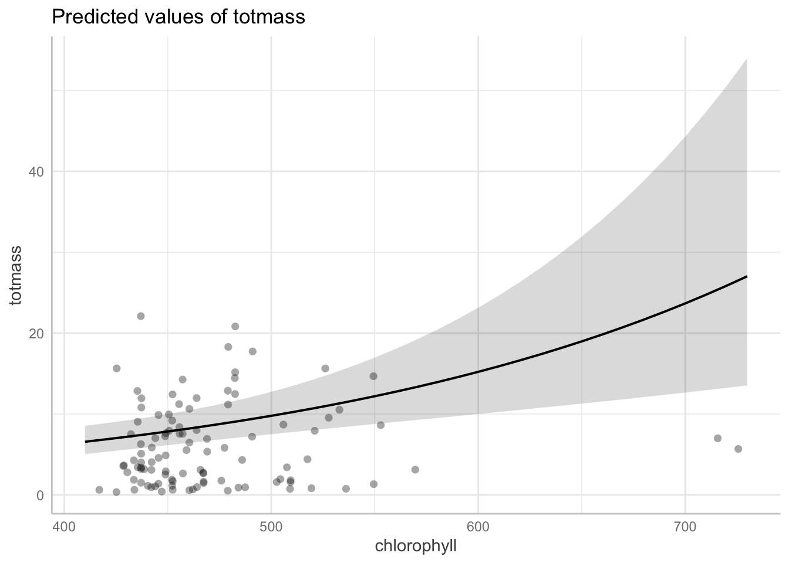

link to repository: https://github.com/laurenstiles/ENVS-193DS_homework-05#envs-193ds_homework-05
Code
#load libraries required for homework library(tidyverse)library(here)library(janitor)library(ggeffects)library(performance)library(naniar) # or equivalentlibrary(flextable) # or equivalentlibrary(car)library(broom)library(MuMIn)library(corrplot)library(AICcmodavg)library(GGally)
Sarracenia, or carnivorous pitcher plants, are plants with specific anatomy that allows them to trap and digest insects (Adlassnig et al, 2011). These digested insects are important sources of nitrogen and phosphorus for carnivorous plants (Farnsworth & Ellison, 2008). Sarracenia have cone shaped leaves from which it is difficult for an organism to remove itself once it has fallen in (Adlassnig et al, 2011). One interesting fact about Sarracenia is that a specific species called Sarracenia purpurea can be used to treat type 2 diabetes and illnesses like tuberculosis, with the potential to be used as an anti-cancer treatment (Huang et al, 2022). Therefore, many may be interested in Sarracenia research for its potential for development of life-saving drugs. In order to understand the relationships that help or hinder Sarracenia growth, it makes sense to research the morphological, physiological, or taxonomic characteristics that predict its biomass. For example, such research could advance the understanding of how to harness these plants for medicinal properties. In this document, we are addressing the question: How do Sarracenia characteristics predict biomass? The null hypothesis we are testing is that none of the characteristics predict biomass. The alternative hypothesis is that at least one of the variables predicts biomass.
7. METHODS
A variety of different species of Sarracenia were used in this study. Their amass (mass-based light-saturated photosynthetic rate of youngest leaf) and above ground size were measured before beginning treatements. Large species were fed 0-0.10 g of finely ground wasps, intermediate sized species were fed 0-0.5 g, and small species were fed 0-0.25 g. Two plants of each species were assigned to one of these feeding levels and 120 plants total were treated. Plants were fed once per week for 7 weeks (Ellison, A. and E. Farnsworth, 2021).
We used open access data from the EDI Portal in an attempt to understand the overarching question: How do Sarracenia characteristics predict biomass? We selected the following variables for the analysis: chlorophyll (chlorophyll a + b content (mg/g) of youngest fully-expanded leaf produced by the plant), amass (mass-based light-saturated photosynthetic rate of youngest leaf (units: nmol CO2 • g-1 • s-1), sla (specific Leaf Area (cm2/g) of youngest fully-expanded leaf produced by the plant), num_phylls (number of phyllodes produced by each plant), num_lvs (total number of pitchers and phyllodes produced by each plant), totmass (total above- and below-ground plant biomass), species (species of pitcher plant used – all Sarracenia), and feedlevel (grams of ground hymenoptera fed per week). We used a multiple linear regression model to analyze the relationship between the above variables and biomass.
Visualize the missing data (see figure below): We are interested in looking at how the factors in each column affect total mass of the plants, and we are not yet sure how they will do so. We are not sure how the data was collected and cannot rectify the NAs by finding missing data in old records. Therefore, we drop the NA values to get the most accurate picture of their relationships.
Code
missing_dat <-gg_miss_var(plant) +labs(caption ="There is missing data in 5 columns: cholorphyll, amass, sla, num_phylls, and num_lvs", hjust =0.1) +theme(plot.caption =element_text(hjust =0))missing_dat
Code
#get rid of the missing values from the above visualization plant_subset <- plant|>drop_na(sla, chlorophyll, amass, num_lvs, num_phylls)#103 observations compared to the original 120
Visualization of Pearson’s correlation between variables: This plot indicates that none of the investigated variables have a notably strong relationship, since all are < |0.7|. The strongest positive relationship is between sla () and amass (0.32) and the strongest negative relastionship is between num_lvs and amass (-0.31).
Code
#plot to visually represent pearson's r between different variables in the dataset #calculate pearson's r for numerical predictors only plant_cor <- plant_subset |>#select only the numerical predictor variables select(feedlevel:num_phylls) |>#cor calculates various correlation metrics, pearsons, kendall, spearman --> we will use pearson cor(method ="pearson") #output is a correlation matrix, diagonal = variables compared to themselves, above and below is correlation with another variable #creating a correlation plot corrplot(plant_cor, #change the shape of what is in the cells method ="ellipse",#right and left pointing represents whether relationship is positive or negative#show coefficients and choose color for them addCoef.col ="black",mar=c(2,5,4,7)) title(sub ="Numbers in black represent the correlation value between overlapping variables columns in each box. The ellipses pointing to the right represent a positive relationship, while those to the left represent a negative relationship. Colors represent strength of the relationship along a spectrum.")
Visualization of relationship between variables: We explored the relationship between variables using ggpairs(). The correlation between variables are all < |0.7|, suggesting that they do not have very strong relationships and supporting the results from the Pearson’s correlation plot. The density plots (the diagonal) for each variable indicated that most of the data is right skewed (except for species because it is categorical) and the scatterplots show clustering on the bottom left of most graphs. The histograms and boxplots indicate that there is variation in predictor values between different species .
Code
plant_subset |>#select only the numerical predictor variables select(species:num_phylls) |>ggpairs(title ="This graph shows correlation between variables in the model and displays visual representations of their relationship")
To determine how species and physiological characteristics predict biomass, we fit multiple linear models.The null model establishes predicted values by chance, rather than based on the variables we are interested in (there are not predictors in the model). In contrast, the full model establishes predicted values based off of each of the different variables we are interested in (has the response variable and all of the predictors).
Code
#write null model -- specify using "1" as predictor null <-lm(totmass ~1, data = plant_subset)#specify full model with everything in it full <-lm(totmass ~ species + feedlevel + sla + chlorophyll + amass + num_lvs + num_phylls, data = plant_subset)
We visually assessed normality and homoskedasticity of residuals using diagnostic plots for the FULL MODEL: These plots indicated that the residuals are not homoskedastic, since the points are clumped together towards the beginning of the line in both the residuals vs fitted and the scale-location plot. The Normal Q-Q plot shows some deviation from the line on both ends, but there are no outliers affecting the distribution, since there are no labeled points outside of the dotted lines. We found that the residuals are neither normally distributed nor homoskedastic using the Shapiro-Wilk test (null = variable of interest (i.e. the residuals) are normally distributed) and the Breusch-Pagan test (null = variable of interest (residuals) has constant variance).
Code
#visualization for full model par(mfrow =c(2,2))plot(full)
Code
#check for normality using the the Shapiro-Wilk testcheck_normality(full)
Warning: Non-normality of residuals detected (p < .001).
Code
#check for homoscedasticity using the Breusch-Pagan testcheck_heteroscedasticity(full)
Since the full model did not show normally distributed and homoskedastic residuals, we tried transforming the data using log() in hope that the residuals will now meet these assumptions. In this case, we log transformed the response variable.
Code
#tranform null model null_log <-lm(log(totmass) ~1, data = plant_subset)#transform full model full_log <-lm(log(totmass) ~ species + feedlevel + sla + chlorophyll + amass + num_lvs + num_phylls, data = plant_subset) #hope that residuals will now be normally dist#check assumptions visually par(mfrow =c(2,2))plot(full_log) #plots look much better now
OK: residuals appear as normally distributed (p = 0.107).
Code
check_heteroscedasticity(full_log) #homoskedastic
OK: Error variance appears to be homoscedastic (p = 0.071).
We chose three more models with different predictor variables to test. We chose species as the predictor for model2_log since we wanted to investigate whether species is the most reliable predictor of biomass for Sarracenia. We found that this model fits the assumptions normal and homoskedastic residuals both visually and statistically. We chose num_lvs, sla, chlorophyll, feedlevel, amass, and species for model3_log because we wanted to simplify the inputs compared to the full model. According to the EDI metadata, num_lvs already includes the number of phyllodes produced by each plant. We also found that this model fits the assumptions normal and homoskedastic residuals both visually and statistically. We chose amass, chlorophyll, and feedlevel for model4_log to see if photosynthesis and nutrients are the main predictors of biomass – and if the model would fit the assumptions if the other predictors from model3_log were removed. Photosynthetic rate (amass) would affect biomass because plants accumulate biomass through photosynthesis, while chlorophyll is important since it is the pigment used for photosynthesis. Plants cannot grow well without access to nutrients, so it made sense to add feedlevel as a predictor the model. We found that this model resulted in residual non-normality and heteroskedasticity.
Code
#model 2_log model2_log <-lm(log(totmass) ~ species, data = plant_subset)#check assumptions for model2_log: #visually par(mfrow =c(2,2))plot(model2_log)

Code
#statistically check_normality(model2_log)
OK: residuals appear as normally distributed (p = 0.374).
Code
check_heteroskedasticity(model2_log)
OK: Error variance appears to be homoscedastic (p = 0.100).
Warning: Non-normality of residuals detected (p = 0.023).
Code
check_heteroskedasticity(model3_log)
OK: Error variance appears to be homoscedastic (p = 0.086).
We evaluated multicollinearity for the FULL MODEL by calculating generalized variance inflation factors and determined that this model does not display evidence of collinearity since the GVIF plot shows values that are each less than 5. Therefore, it does not seem that collinearity is inflating the R2 for this model.
We compared models using Akaike’s Information Criterion(AIC) values. We chose to continue with the model3_log since it resulted in the lowest score.
Code
AICc(full_log)
[1] 133.9424
Code
AICc(model2_log)
[1] 157.5751
Code
AICc(null_log)
[1] 306.0028
Code
AICc(model3_log) #this one has the lowest score
[1] 131.7593
Code
AICc(model4_log)
[1] 298.5756
8.RESULTS
The best model is the model3_log which includes number of pitchers and phyllodes produced by each plant (num_lvs), the area of the first leaf produced by a plant (sla), the chlorophyll a and b content of the first leaf (chlorophyll), amount of ground hymenoptera fed to each plant(feedlevel), photosynthetic rate (amass), and Sarracenia species as predictor variables. We wanted to test whether this combination would perform better than the full model without the redundant term num_phylls. We also wanted to see if this model would perform better than a model based on factors affecting growth rate (model4_log). We chose this model because it performed the best in terms of Akaike’s Information Criterion(AIC) values. This model also adhered to assumptions of normally distributed and homoskedastic residuals.The model results are summarized in the table below:
The combination of predictors in this model can be interpreted to influence Sarracenia biomass in a statistically significant way (p-value < 0.01). The R-squared for this model is 0.87, which indicates that this model explains about 87 percent of the variability in the data. Degrees of freedom is 88, meaning that there are this many points of control in the model.
We created a visualization of model predictions using ggpredict. We chose to visualize the relationship between chlorophyll and biomass, since it is a significant predictor of Sarracenia total biomass. Based on this plot, there is a positive relationship between these two variables, though the confidence interval increases with chlorophyll concentration.
Code
#visualizations of model predictions chlor_plot <-plot(ggpredict(model3_log, terms ="chlorophyll", back.transform =TRUE), add.data =TRUE) #ribbon is confidence interval around chlorophyll slope chlor_plot

The best model indicates that the following variables predict biomass of Sarracenia plant: number of pitchers and phyllodes produced by each plant (num_lvs), the area of the first leaf produced by a plant (sla), the chlorophyll a and b content of the first leaf (chlorophyll), amount of ground hymenoptera fed to each plant(feedlevel), photosynthetic rate (amass), and Sarracenia species. All else held constant, for every increase or decrease of each variable, there is an associated increase or decrease in Sarracenia biomass. The coefficient for each describes how each variable is related to biomass by describing the slope of their linear relationship.
9. BIBLIOGRAPHY
Adlassnig, Peroutka, M., & Lendl, T. (2011). Traps of carnivorous pitcher plants as a habitat: composition of the fluid, biodiversity and mutualistic activities. Annals of Botany, 107(2), 181–194. https://doi.org/10.1093/aob/mcq238
Ellison, A. and E. Farnsworth. (2021). Effects of Prey Availability on Sarracenia Physiology at Harvard Forest 2005 ver 18. Environmental Data Initiative. https://doi.org/10.6073/pasta/26b22d09279e62fd729ffc35f9ef0174 (Accessed 2023-06-03).
Huang, Chiang, W.-Y., Chen, P.-J., Lin, E.-S., & Huang, C.-Y. (2022). Anticancer and Antioxidant Activities of the Root Extract of the Carnivorous Pitcher Plant Sarracenia purpurea. Plants (Basel), 11(13), 1668–. https://doi.org/10.3390/plants11131668
Farnsworth, & Ellison, A. M. (2008). Prey availability directly affects physiology, growth, nutrient allocation and scaling relationships among leaf traits in 10 carnivorous plant species. The Journal of Ecology, 96(1), 213–221. https://doi.org/10.1111/j.1365-2745.2007.01313.x